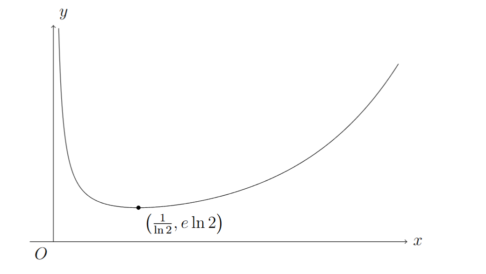
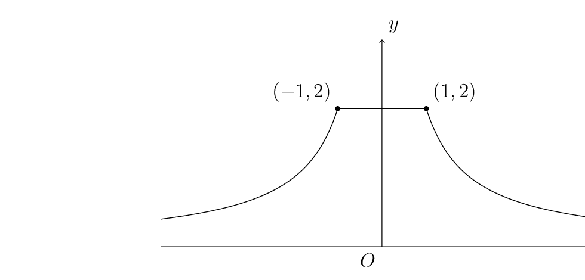

(i) Let \(\displaystyle u=t-1\)
\[
f(x)=\int_0^2u^{x-1}\,du=\left[\frac{u^x}{x}\right]_0^2=\frac{2^x}{x}
\]
\[
\frac{dy}{dx}=\frac{x2^x\ln2-2^x}{x^2}
\]
\[
\frac{dy}{dx}=0\implies x=\frac1{\ln2}
\]
| \(x\) | \(0^{+}\) | \(\frac1{\ln2}\) | \(\infty\) |
| \(y\) | \(\infty\) | \(e\ln2\) | \(\infty\) |

(ii)
\[
g(x)=\int_{-1}^{1}\frac1{\sqrt{1-2xt+x^2}}\,dt
\]
For \(\displaystyle x\neq0\),
Let \(\displaystyle u=1-2xt+x^2,\ \frac{du}{dt}=-2x\)
\[
\begin{aligned}
\int \frac{1}{\sqrt{1-2xt+x^2}}\,dt
&=\int u^{-\frac12}\cdot\left(-\frac1{2x}\right)\,du\\
&=-\frac1x u^{\frac12}\\
&=-\frac1x\sqrt{1-2xt+x^2}
\end{aligned}
\]
\[
\therefore g(x)=\left[-\frac1x\sqrt{1-2xt+x^2}\right]_{-1}^{1}
\]
For \(\displaystyle x=0\),
\[
g(0)=\int_{-1}^{1}1\,dt=2
\]
\[
\begin{aligned}
g(x)
&=\left[-\frac1x\sqrt{1-2xt+x^2}\right]_{-1}^{1}\\
&=\frac1x\left(\sqrt{x^2+2x+1}-\sqrt{x^2-2x+1}\right)\\
&=\frac1x\left(|x+1|-|x-1|\right)
\end{aligned}
\]
\[
g(0)=\int_{-1}^{1}1\,dt=2
\]
\[
g(x)=
\begin{cases}
\displaystyle -\frac2x, & x<-1,\\[6pt]
2, & -1\leq x\leq 1,\\[6pt]
\displaystyle \frac2x, & x>1.
\end{cases}
\]
| \(x\) | \(-\infty\) | \(-1\) | \(0\) | \(1\) | \(\infty\) |
| \(y\) | \(0^{+}\) | \(2\) | \(2\) | \(2\) | \(0^{+}\) |
